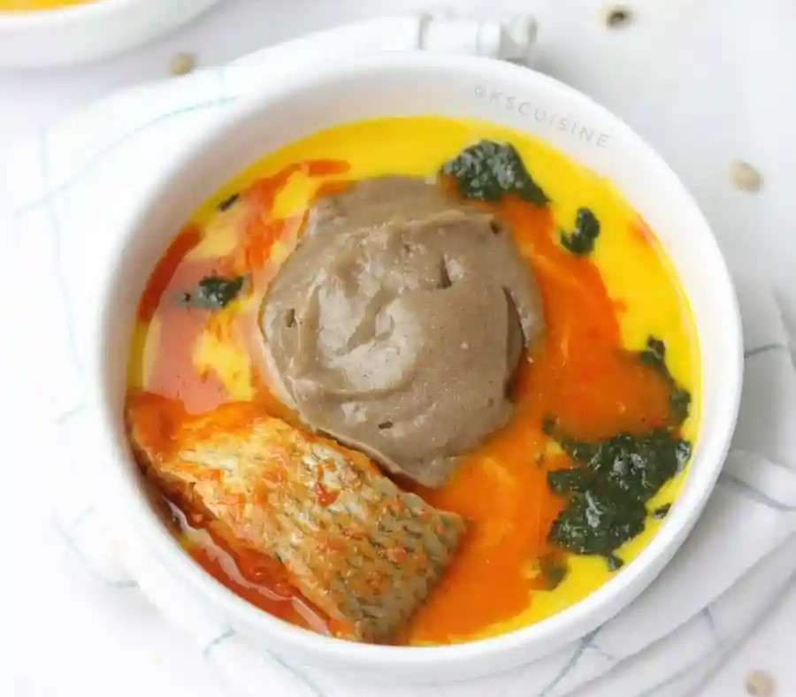

Amala

WHAT IS AMALA?
Amala is made from yam flour (Elubo) and is a Nigerian Cuisine mostly eaten by the Yorubas especially the people of Oyo state. Yam flour is yam that has been peeled, dried and blended into flour and it's typically brownish in colour.
Amala is easy to make but this is debatable as some will say it's not.
We cut out a morsel from the meal, then we form an indentation on it with the thumb. Then, we scoop some stew or soup over it and we eat it.
INGREDIENTS
- Yam flour (Elubo)
- Water
- Hot water (reserved)
EQUIPMENT
- Electric kettle
- Pot
- Bowl
- Measuring cups
- Wooden spoon (Omorogun)
STEPS
- Boil water in electric kettle and measure 4 cups into a pot.
- Cover the water and let it boil till it starts making bubbles like in the picture below.
- Lower the heat to a bare minimum and add the yam flour into the water all at once then stir/turn with wooden spoon or spatula (omorogun) till it comes together but it won't be smooth at this stage. This process takes about a minute.
- Add the reserved 1 cup of water to the Amala using the wooden spoon to create well in the middle and sides and leave the water to steam the amala for 1-2 minutes.
- Now stir the amala for 1-2 minutes till smooth. After this time some put it down and turn. If you are making large quantity you might find this helpful but with this quantity it's not necessary really but if you find it easier bring it down and turn.
- Enjoy with Ewedu, Gbegiri, Fresh fish stew, Ogbono, Okra or any other soup of your choice.